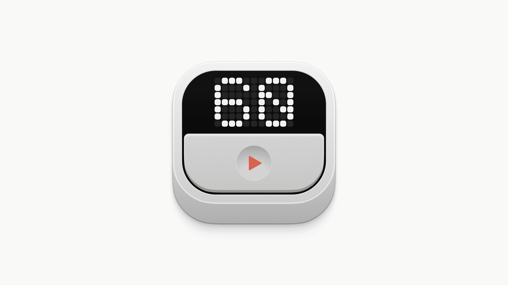
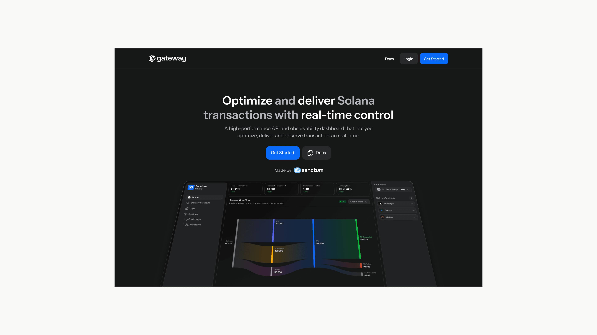
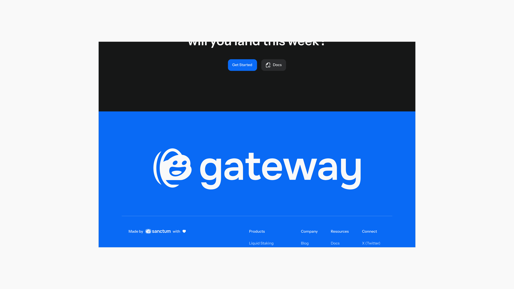
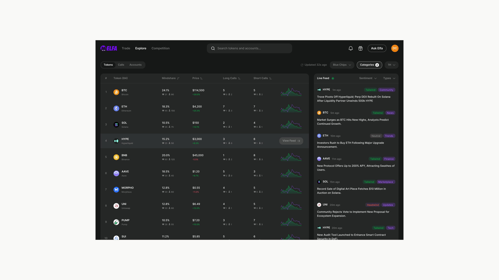
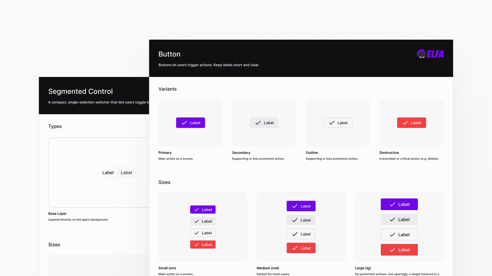

What Does It Mean to Do Your Best Work?
Reflections on obsessive design standards, craftsmanship, and why software built with genuine care always wins.
I am a Software engineering student with a strong business acumen and a sharp focus on user experience, currently studying at Ajou University in South Korea under the prestigious Global Korea Scholarship.
My dream is to contribute to the world by shipping products that simplify people's lives as technology rapidly advances.

Personal Project
Designed and built a dynamic-island-style macOS app to help with my focus.
Latest version: v0.2.1, desktop only


Work
Gateway is Sanctum’s expansion into the transaction-landing market. Designed the logo and responsive landing page, working with developers to make a technical product more approachable while staying true to Sanctum’s visual language.


Freelance
Redesigned Elfa.ai's design system for a more polished web experience as it scales AI trading to the masses.